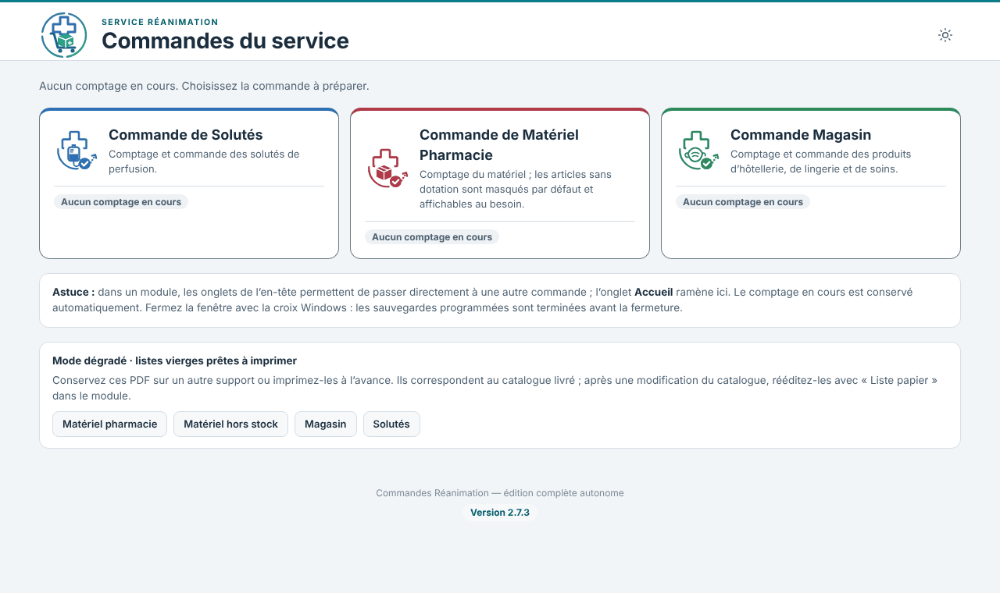
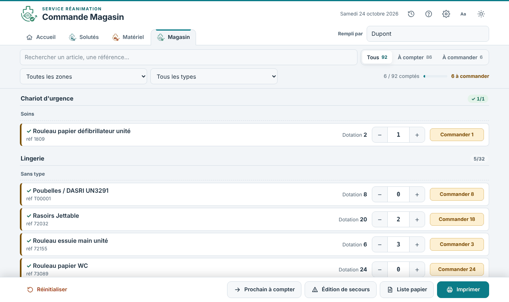
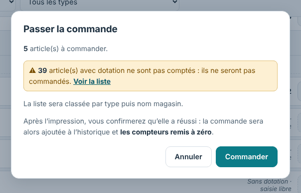
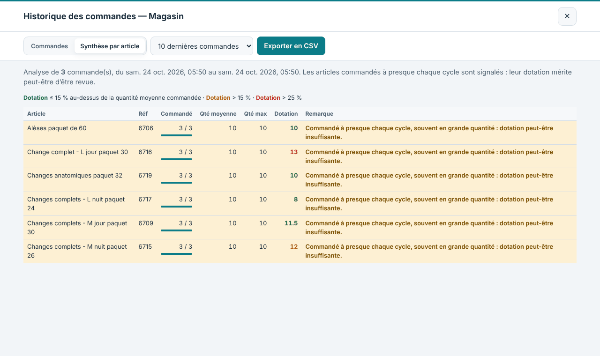
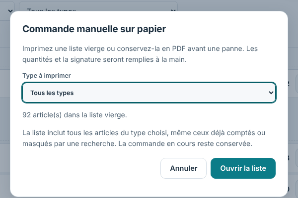
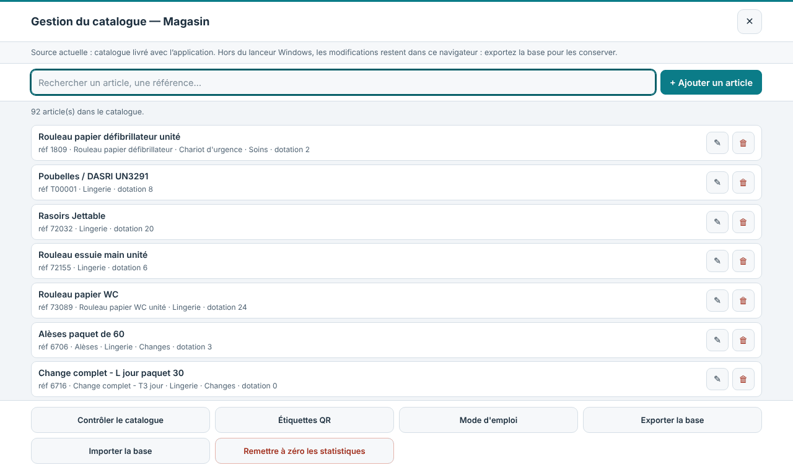

1. Présentation
Commandes Réanimation permet de compter le stock du service, puis d’imprimer la commande correspondante. Trois modules partagent le même fonctionnement :
| Module | Usage |
|---|---|
| Solutés | Comptage et commande des solutés de perfusion. |
| Matériel (Pharmacie) | Comptage du matériel ; articles sans dotation masqués par défaut ; feuille « Hors Stock » séparée. |
| Magasin | Produits d’hôtellerie, de lingerie et de soins ; commande classée par type puis nom magasin. |
L’application fonctionne hors connexion : catalogues et bibliothèques sont intégrés. Le comptage en cours est conservé automatiquement sur le poste. Ce mode d’emploi est aussi consultable dans l’application : bouton « Mode d’emploi » de l’accueil, ou lien en tête de l’aide (?) de chaque module.

2. Installation et mise à jour
Fermez l’application si elle est ouverte (croix de la fenêtre Windows).
Double-cliquez sur Commandes_Reanimation_Setup_2.7.4.exe et suivez l’assistant en français. Aucun droit administrateur n’est requis.
Ouvrez l’application avec le raccourci « Commandes Réanimation » (Bureau ou menu Démarrer). Utilisez toujours ce raccourci : il active l’enregistrement dans C:\commandes.
Pour une mise à jour, installez simplement par-dessus. Les comptages, catalogues modifiés et réglages sont conservés. Si l’application est encore ouverte, l’installateur le signale : fermez-la puis cliquez sur « Réessayer ».
Prérequis : Microsoft Edge. L’installateur n’est pas signé numériquement ; faites valider le déploiement par votre service informatique.
Dossiers de données
Au lancement, trois dossiers sont créés dans C:\commandes (le compte Windows doit pouvoir y écrire) :
| Dossier | Rôle |
|---|---|
| DM_Pharmacie, Solutés, Magasin | Un dossier par module. |
| … \Application | Données publiées (catalogue modifié, historique, mot de passe) et exports de catalogue. |
| … \Sauvegardes | Commandes et historiques exportés. |
| … \Etiquettes | Planches d’étiquettes. |
| … \Archives | PDF de commande et versions précédentes remplacées. |
3. Faire une commande
3.1 Avant de commencer
Renseignez votre nom dans Rempli par. Il figure sur la commande ; sans lui, la commande est refusée. Les derniers noms saisis sont proposés.
3.2 Compter le stock
À la douchette : scannez l’étiquette du casier. L’article s’affiche seul et le curseur se place dans la case quantité. Tapez le nombre d’unités en stock, appuyez sur Entrée, puis scannez le suivant (scan → chiffre → Entrée → scan).
À la main : tapez un nom ou une référence dans la recherche, puis saisissez la quantité au clavier ou avec les boutons − et +. La molette de la souris ne modifie jamais une quantité.

3.3 Lire les pastilles
| Pastille | Signification |
|---|---|
| À compter | Stock pas encore saisi. L’article n’est pas commandé tant qu’il n’est pas compté. |
| Stock OK | Compté, stock suffisant : rien à commander. |
| Commander 5 | Compté, il manque 5 unités. |
| Sans dotation | Pas de dotation définie : indiquez la quantité voulue, ou laissez vide. |
| Aucune commande | Article sans dotation pour lequel vous avez mis 0. |
| ⚠ À vérifier | Quantité inhabituelle (par exemple plus de trois fois la dotation) : probable erreur de frappe. Rappelée avant l’impression. |
3.4 Se repérer
La barre d’avancement indique le nombre d’articles comptés et à commander.
Le sélecteur Tous / À compter / À commander filtre la liste ; les compteurs donnent le nombre d’articles de chaque vue.
Chaque zone indique combien de ses articles sont comptés ; une zone terminée est cochée.
Le bouton « Prochain à compter » amène au premier article non compté. Un scan reste prioritaire : l’article s’affiche même hors de la vue en cours.
3.5 Terminer et commander
Cliquez sur Commander. Une fenêtre récapitule le nombre d’articles commandés, ceux qui ne sont pas comptés et les quantités inhabituelles.
Confirmez avec Commander. Une copie PDF datée est conservée dans le dossier Archives, puis la fenêtre d’impression de Windows s’ouvre. Pour le Matériel, deux travaux se suivent : dispositifs médicaux, puis Hors Stock.
Après l’impression, l’application demande Commande imprimée ? — Oui : la commande est ajoutée à l’historique, les compteurs sont remis à zéro et « Rempli par » est vidé ; le cycle est clos. Non : le comptage est conservé, il suffit de cliquer de nouveau sur Commander.

3.6 Interrompre et reprendre
Le comptage est conservé automatiquement. À la réouverture, un bandeau propose Continuer ou Repartir de zéro. Le bouton Réinitialiser efface tous les comptages pour démarrer un nouveau cycle.
4. Le module Magasin
Le module Magasin fonctionne comme les deux autres, avec ces particularités :
Commande imprimée par type, puis par nom magasin. Les articles sans type sont regroupés sous « Sans type ».
Liste papier (mode dégradé) classée de la même façon, avec un filtre « Type » à la place de « Zone » et une colonne « Nom magasin ».
Édition de secours : elle rouvre le dernier PDF imprimé, donc déjà classé par type pour les impressions faites depuis la version 2.7.3.
À l’écran, le comptage reste organisé par zone de rangement (localisation) pour faciliter le parcours ; le type apparaît en sous-titre de chaque zone.
Le catalogue livré compte 92 articles, avec leurs types (Changes, Hôtellerie, Soins).
5. Historique et synthèse par article
Le bouton Historique de l’en-tête liste les commandes imprimées (date, auteur, articles, quantités) et peut les exporter en CSV. L’onglet Synthèse par article indique pour chaque article le nombre de fois où il a été commandé, la quantité moyenne et maximale, et la dotation actuelle.
La dotation est colorée selon son écart avec la quantité moyenne commandée, pour repérer les dotations mal calibrées :
| Couleur | Règle |
|---|---|
| Vert | Dotation au plus 15 % au-dessus de la quantité moyenne commandée. |
| Orange | Dotation de plus de 15 % au-dessus de la quantité moyenne. |
| Rouge | Dotation de plus de 25 % au-dessus de la quantité moyenne. |
Les dotations « libre » (0) ou absentes ne sont pas colorées. La remarque « Commandé à presque chaque cycle » signale les articles dont la dotation mérite peut-être d’être revue.

6. Édition de secours et mode dégradé
Édition de secours : rouvre le dernier PDF de commande du module dans une fenêtre Edge dédiée, pour le réimprimer. Elle ne valide pas de nouvelle commande et ne modifie pas le comptage.
Liste papier : ouvre une liste vierge A4 à remplir à la main (stock compté, à commander, visa). Rééditez-la après toute modification du catalogue. Des listes PDF prêtes à imprimer figurent aussi sur l’écran d’accueil.

En cas de panne : suspendez la transmission, vérifiez le stock, utilisez les listes papier à jour et évitez les doubles commandes à la reprise.
Affichage
Le bouton soleil / lune bascule entre affichage clair et sombre. Le bouton Aa bascule les noms d’articles entre casse adaptée (lecture plus rapide) et casse d’origine du catalogue ; les références et les documents imprimés restent identiques au catalogue. À l’ouverture, la fenêtre est agrandie à la zone de travail de l’écran (sans plein écran).
7. Partie administrateur
L’icône ⚙ (Gestion du catalogue) demande le mot de passe d’administration. Ce mot de passe ne chiffre pas les données : il n’empêche pas un accès au poste.
7.1 Modifier le catalogue

Chaque article dispose d’un bouton de modification et de suppression ; « + Ajouter un article » crée une fiche.
| Champ | Rôle |
|---|---|
| Référence | Identifiant de l’article, encodé dans l’étiquette. |
| Dénomination | Nom utilisé pendant le comptage et sur les étiquettes. |
| Nom Magasin / Nom Pharmacie | Nom repris sur la commande destinée au magasin / à la pharmacie. |
| Localisation | Zone de rangement : détermine l’ordre de parcours. |
| Type | Détermine le tri à l’impression. « Hors Stock » bascule l’article en rouge et sur une commande séparée. |
| Dotation | Stock cible. À 0, l’article passe en saisie libre. |
| Seuil | Facultatif : aucune commande tant que le stock reste au-dessus. |
| Quantité à commander | Facultatif : quantité imposée dès que le seuil est atteint. |
7.2 Le seuil de déclenchement
Tant que le stock reste au-dessus du seuil, rien n’est commandé. Au seuil ou en dessous :
si une quantité à commander est renseignée, elle est commandée telle quelle (doublée si le stock est à 0, pour le Matériel) ;
sinon, pour un article courant : le complément pour revenir à la dotation (dotation − stock) ;
sinon, pour un article Hors Stock : la dotation entière.
Exemple : article courant, dotation 4, seuil 2. À 3 en stock : rien ; à 2 : commande de 2 ; à 1 : commande de 3.
7.3 Contrôle, export et import
Contrôler le catalogue : détecte les doublons de référence, dénominations vides, seuils incohérents et champs manquants. Le même contrôle précède chaque import.
Exporter la base : JSON recommandé (CSV ou XLSX possibles). Faites une sauvegarde JSON régulièrement et avant toute modification, import ou mise à jour.
Importer la base : conserve les comptages en cours lorsque la référence existe encore.
Pour transférer le catalogue vers un autre poste : exportez puis importez, ou copiez le fichier Donnees_<Module>.js dans le même dossier Application du poste de destination.
7.4 Conservation automatique
Chaque modification est enregistrée sur le poste puis publiée dans C:\commandes\<Module>\Application ; la version précédente est copiée dans Archives. Ce fichier est relu à chaque ouverture : il est partagé entre les comptes Windows du poste et permet la reprise après réinstallation ou changement de profil.
7.5 Statistiques et étiquettes
Remettre à zéro les statistiques efface l’historique du module, donc la synthèse par article et la « dernière commande » de l’accueil. Exportez l’historique en CSV avant.
Étiquettes : formats « Standard 27 » et « Avery plastifié » (Avery L7060 : 21 étiquettes de 63,5 × 38,1 mm sur A4). Cochez les étiquettes voulues, imprimez à 100 % sans ajustement à la page, et testez d’abord sur une feuille ordinaire.
8. Douchette (Eyoyo EY-034)
Les codes de réglage sont affichés dans le mode d’emploi intégré (bouton ?). Ils se scannent directement à l’écran. Résumé :
Scannez les 9 codes dans l’ordre : mode normal, activation des codes 2D, suffixe Entrée, volume, vibration, veille, puis la séquence préfixe (étapes 7, 8 et 9, à enchaîner).
Pour un PC Windows, scannez ensuite « Clavier français ».
Le préfixe Entrée referme d’abord la case quantité, puis la référence arrive dans la recherche : vous scannez sans surveiller le curseur.
9. En cas de problème
| Symptôme | Que faire |
|---|---|
| « Référence inconnue » | L’étiquette ne correspond à aucun article (peut-être périmée). Signalez-la à l’administrateur. |
| Le scan tape des symboles | Le clavier de la douchette ne correspond pas à Windows : scannez « Clavier français ». |
| Rien ne se passe au scan | Vérifiez qu’un suffixe Entrée ou Tabulation est activé sur la douchette. |
| L’installation signale un fichier verrouillé | Fermez l’application (croix Windows), puis « Réessayer ». En dernier recours, terminez CommandesReanimation.exe dans le Gestionnaire des tâches. |
| Commander ne lance pas l’impression | Un message l’indique et le comptage est conservé : patientez quelques secondes puis cliquez de nouveau sur Commander. Si la copie PDF ne peut pas être enregistrée, « Commander quand même » permet de poursuivre. |
| Le bouton « Dossier » ne répond pas | Les chemins réseau \\serveur\… ne sont pas acceptés : mappez d’abord le dossier sur une lettre de lecteur. |
| Comptage disparu après mise à jour du catalogue livré | Les catalogues enregistrés sont remplacés par le nouveau catalogue livré : réimportez votre sauvegarde JSON. |
10. Précautions d’usage
Vérifiez références, noms, unités, stocks, dotations et quantités ; après un scan ou un import, contrôlez le résultat.
Exportez régulièrement une sauvegarde JSON dans un dossier autorisé par le service ; le dossier C:\commandes ne remplace pas une sauvegarde.
Verrouillez votre session Windows et limitez l’accès aux fichiers et sauvegardes.
Utilisez uniquement un installateur fourni par le responsable du service ; faites valider les mises à jour de Windows et d’Edge par le service informatique.
Signalez toute anomalie au responsable de l’application.
Régler la douchette Eyoyo EY 034
Les codes ci-dessous se scannent directement sur cet écran, le lecteur en main. Inutile de ressortir le manuel papier.
Paramétrage complet scannez les 9 codes dans l’ordre
C'est la seule manipulation à connaître. Prenez la douchette, scannez les vignettes de 1 à 9, une par une, sans en sauter. Un bip confirme chaque étape. Rien ne s'écrit à l'écran : ces codes s'adressent au lecteur, pas à l'application.
Les étapes 7, 8 et 9 vont ensemble : elles programment le préfixe et doivent être scannées à la suite, dans cet ordre. Si vous êtes interrompu, reprenez à l'étape 7.
À quoi sert ce préfixe ? Sans lui, une référence scannée alors que le curseur se trouve dans une case quantité venait s'ajouter au nombre déjà saisi. L'Entrée envoyée avant la référence referme d'abord la case, puis la référence arrive dans la recherche. Vous pouvez ainsi scanner sans jamais surveiller où se trouve le curseur.
Selon l’appareil le clavier
Sur Windows, utilisez le clavier ou les boutons − et + pour saisir les quantités.
Selon la liaison
En USB filaire, rien à scanner : le câble suffit.
En cas de problème
Le scan écrit des symboles — Le clavier ne correspond pas à l'appareil : voir « Selon l'appareil » ci-dessus.
Rien ne se passe — Refaites la séquence des 9 codes : le suffixe Entrée manque probablement.
Les QR ne passent plus — La lecture 2D a été désactivée : refaites la séquence (étape 2).
La quantité se mélange à la référence — Le préfixe manque : refaites les étapes 7, 8 et 9.
Des caractères manquent — Scannez « Transmission lente ».
Plus rien ne fonctionne — Scannez « Réglages d'usine », puis reprenez la séquence complète.
Sur Windows, utilisez le clavier ou les boutons − et + pour saisir les quantités.